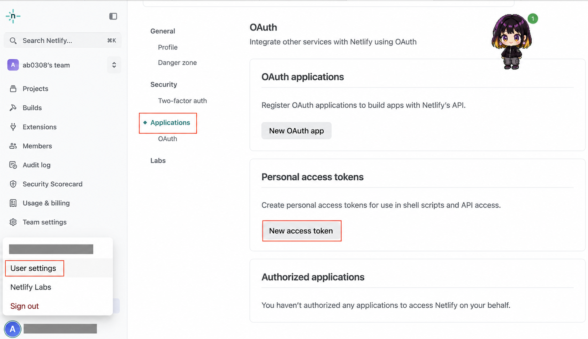

ChatGPT AI Agent Part 4 · 進階
Padlet MCP、NotebookLM MCP、Netlify MCP 與網頁遊戲上架
新北市大豐國小 · 許凱琳老師
CONNECT
官方做好的連接，登入授權後就能使用，例如 Google、GitHub、Notion、Canva。
AI 與外部工具的「標準插頭」；自己加入伺服器，連接更多服務。
教 AI 一套可重複使用的 SOP。
在指定時間重複執行已穩定的流程。
PLUGINS
讀取與管理程式專案、建立網頁版本紀錄，搭配 GitHub Pages 發布網站。
搜尋與整理 Notion 頁面、資料庫，把成果寫回筆記。
Gmail、Google 雲端硬碟、日曆、文件、試算表：讀信、找檔、排行程。
搜尋與建立 Canva 設計，把內容套進範本做成海報或簡報。
⚠️ SECURITY
MCP 1
建立互動牆、整理回應、草擬個別回饋
PADLET · SETUP
npx -y padlet-mcp setup，在本機安裝精靈輸入金鑰，完成後重啟 ChatGPT 應用程式。PADLET · TASK ①
PADLET · TASK ②
將回應整理為「已理解、想應用、仍有疑問」，統計數量與常見觀點。
不確定、離題、可能涉及個資的內容另外列出，不替學員猜測。
PADLET · TASK ③
MCP 2
讓 Agent 幫你建立筆記本、加入來源、產生語音摘要
NOTEBOOKLM · SETUP
uv tool install notebooklm-mcp-clinlm login，在跳出的瀏覽器登入 Google 帳號。codex mcp add notebooklm-mcp -- notebooklm-mcp，再重新開啟 Codex。請用 NotebookLM MCP 列出我的筆記本，只讀取，不要建立或刪除。NOTEBOOKLM · TASK
延續 Part 2 任務 1：把紅毛城的官方資料交給 NotebookLM 整理。
請用 NotebookLM MCP 建立一個「淡水紅毛城戶外教育」筆記本： 1．把我提供的官方網址加入為來源，先列出清單讓我確認。 2．來源加入後，請 NotebookLM 回答：「四年級學生參觀前最需要知道的三件事？」 3．產生一段給學生聽的中文語音摘要，完成後告訴我在哪裡收聽。 不要刪除或修改我其他的筆記本。MCP 3
從一句需求開始，完成可玩、可驗收、可分享的網頁遊戲
MISSION
用 Codex 建立網頁遊戲，在自己的電腦與手機上實際試玩。
連接 Netlify MCP，先建立預覽版，驗收後才正式上架。
GAME SPEC
WORKSPACE
click-game 資料夾。PROMPT ①
請在這個資料夾製作 30 秒限時點擊網頁遊戲。先盤點資料夾並列出計畫，再開始製作。要有開始、倒數、隨機移動的目標、分數、結果與重新開始；支援電腦與手機。完成後實際開啟檢查，告訴我如何試玩。
VERIFY
倒數會停在 0；每次點擊只加 1 分；結束後不再計分。
目標不會跑出邊界；手機上也能點；按鈕與文字清楚。
再玩一次時，分數、時間與目標狀態會正確重置。
沒有要求個資、密碼或不必要的網路權限。
PROMPT ②
保留現有玩法與功能，把遊戲改成「＿＿＿」主題。請改善配色、標題、目標造型、按鈕回饋與結束畫面，並檢查手機版。不要改變 30 秒與計分規則。
NETLIFY
MCP SETUP
codex mcp add netlify --url https://netlify-mcp.netlify.app/mcp請使用 Netlify MCP 執行 get-user 測試，只回報帳號連線狀態，不要部署。SECURITY

DEPLOY PREVIEW
請使用 Netlify MCP 把目前的限時點擊遊戲建立為預覽部署。先檢查要發布的資料夾與檔案，不要改成正式部署。完成後提供預覽網址與驗收項目。
PRODUCTION
.netlify.app 分享網址。UPDATE
AGENT · SKILL
已經驗證過、之後會重複使用，而且有清楚輸入、步驟與驗收方式的流程。
將「檢查網頁遊戲 → 建立 Netlify 預覽 → 回報驗收清單」做成重複流程。
AGENT · PROJECT RULES
AGENTS.md 是有特定用途的 Markdown 檔；不是 Agent 寫的每一個 .md 檔都叫 AGENTS.md。AGENT · HANDOFF
請把目前專案整理成 handoff.md，包含專案目標、已完成功能、重要檔案、已做過的測試、Netlify 部署狀態、尚未解決的問題與建議下一步。不要修改遊戲內容，不要寫入 Token 或密碼。
AGENTS.md 與 handoff.md，盤點現況，再提出接續計畫。接上工具 🔌
外掛一鍵授權、MCP 自己接；授權用官方流程，Token 絕不公開
下一集 Part 5：結語，使用 AI Agent 的想法、流程與安全